Operating Documentation
Direction 5193574-800, Rev# 22
LightSpeed 7.X Service Methods
Module Version 1.0, Version Date 4/22/10
Operating Documentation |
Before proceeding with seismic mounting for any of the components in this section, be sure to allow sufficient space to unbolt and move the component from its mounted location for service.
You may need to remove all four mounting bolts.
If removing the component requires lifting, use an appropriate-sized pry bar to lift each corner of the component.
Two installers may be required to safely complete this task.
5/8 in. anchor for IBC 2007 standards or as provided in the seismic kit.
1 (FE or mechanical supplier)
If site specifications require seismic mounting to the floor, use 5/8 in (15 mm) bolts to mount the seismic brackets. Use the brackets that were shipped with the console. Refer to Illustration 1 for mounting hole locations, and mount the console so it can be easily removed for service.
Illustration 1: Seismic Console Mounting Hole Locations
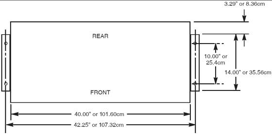
| ||||
| The PDU is very heavy and may present a crush hazard if proper precaution and tools are not used. | ||||
If site specifications require seismic mounting, use 5/8 in. (15mm) bolts, and the seismic brackets and anchors that shipped with the NGPDU. Refer to Illustration 2 for mounting hole locations, and mount the PDU so it can be easily removed for service.
Illustration 2: Seismic PDU Mounting Hole Locations
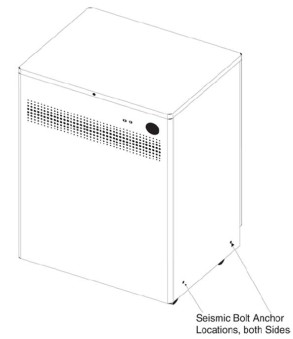
| ||||
| The UPS is very heavy and may present a crush hazard if proper precaution and tools are not used. | ||||
If the site has a UPS, refer to the 3 Phase UPS Installation manual, Direction 5116426-100. If site specifications require seismic mounting, use 5/8 in. (15mm) bolts, or those supplied in the seismic mounting kit, and the seismic brackets that shipped with the UPS. Refer to the manufacturer’s installation instructions to locate the seismic mounting holes, and mount the UPS so it is easily removed for service.
Seismic Kit E4502 FZ
| NOTE: | Most shipped options can be located on the lean cart. Only large options such as the UPS and Smart Step will arrive on its own skid. |
Follow the installation procedures in the Remote Monitor box.
Follow the instructions shipped with the option. The options board should be only mounted on the non-motor side of the gantry. Neatly dress all cables along the gantry base so that the base covers fit properly.
Follow the instructions shipped with the option. If this is a ceiling-mounted option, check that the plate is installed correctly with the holes in the correct location.
| NOTE: | LS VCT 7.2 with GOC6 console will plug into the console. |
Illustration 3: Mavig ceiling mounting plate and Mavig safety chain bracket
Follow the instructions shipped with the Monitor and stand kit. Review the instructions carefully before assembling the stand and accessory basket to avoid repeated steps. Connect to the option interface panel, See Section 3.
Open the boxes and installed the appropriate language warning labels.
The head holders are shipped with shims that require installation to ensure proper fit. Check that shims are included. Follow the shim procedure in Section 9. The holder should fit snugly.
If the site has an Uninterruptible Power Supply (UPS), please refer to UPS Installation for Direction 5272751 for Powerware 9355 UPS. This manual should be shipped with the UPS. Use caution when removing the UPS from the skid. The UPS weight is 620 lb. (281 kg).
Follow the installation instructions with the Option.
Separate the shipping bracket from the gantry option panel. Remove the shipping bracket (bright-colored bracket) (see Illustration 4).
Illustration 4: Shipping Brackets (shown Left and Right side brackets)
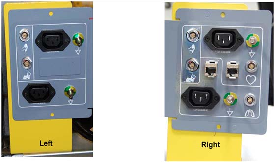
Install brackets using the same hardware used for shipping brackets.
Locate the option mounting brackets (2) on the Lean cart. Install the options panel to the brackets.
Install the bracket to the gantry.
As needed, make any electrical connections between the IPC and options panel.
Illustration 5: Gantry Option Interface Panel
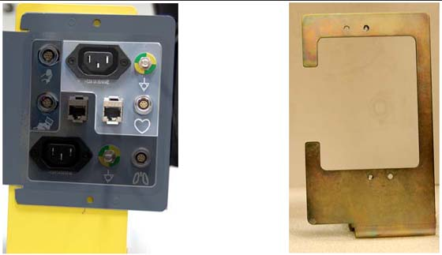
Connect all LAN cables and interface cables to the option interface board and the network switch mounted on the gantry. Option interface plates are mounted on the rear of the gantry on both sides. All options are powered from the console or gantry options power panel located on each side of the back of the gantry.
Pull all cables shipped in the cable collector. (Run 113 and 114) LAN/Cat 5 and option interface cable. Connect to the cables HD 15 (cable type).
Illustration 6: Option Panel Connection
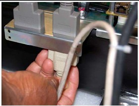
Make all necessary electrical connections between the IPC and the interface panel.
Follow install instructions shipped with monitor to set up the monitor stand with basket.
After the stand is assembled, mount the monitor to the stand by sliding the monitor onto the plate.
Pull down the front pin on plate and slide monitor until it snaps into place.
Secure the monitor using the two nylon set screws under the plate.
Attach the cables. Do not use the cables shipped with the monitor, find the 5317480 cable included with the Cardiac Monitor Option Kit (E8007RP).
| NOTE: | If you use cables in this kit, they must be plugged inside the console power strip. Adapter cables cannot be used on the outside of the console. |
Connect the IEC power cord, ground wire, LEMO and CAT5 to the gantry option interface panel. (See Illustration 7).
Illustration 7: Gantry Option Interface
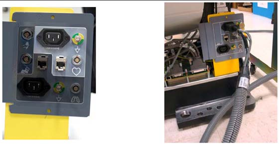
Illustration 8: Connections on Rear of Cardiac Monitor
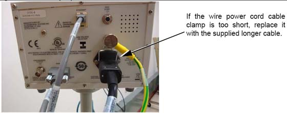
Connect the power cord, ground wire, HD15 and CAT5 to the monitor panel.(See Illustration 8).
The cardiac monitor receives power from the gantry.
Strain relief the cables to the monitor stand, and to the gantry base covers using tywraps. (See Illustration 9).
Illustration 9: Cables Strain Relieved to Stand
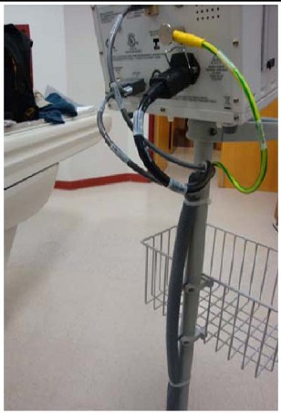
Follow directions provided with Injector.
Illustration 10: Front and Back Injector Connections
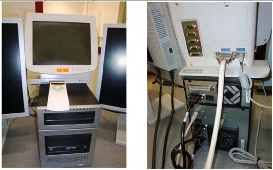
Run the CAT5 LAN cable for the cardiac option between the console and the gantry.
Install the option interface board. The option interface plates are mounted to the gantry on each side.
Illustration 11: Cardiac Option Board
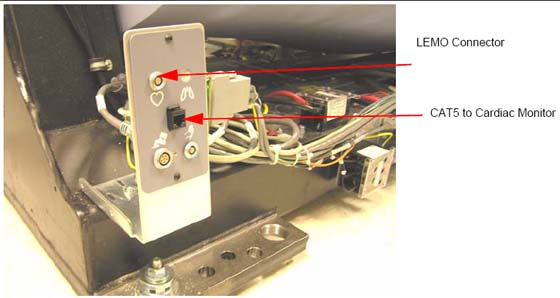
| NOTE: | Connector is not attached to the plate. Use care when making this connection. |
Connect this cable to the gantry base cardiac monitor base plate (GOB board). Different plates are included with the cardiac option kit. Follow the installation procedures in the Cardiac Option kit to install the GOB and cables. (see Illustration 12).
| ||||
| The GOB connectors are not soldered to the board. Do not use the cable to pull on the board. | ||||
Illustration 12: Gantry Option Board
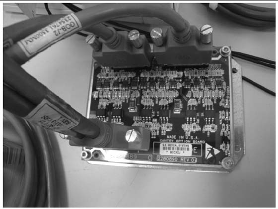
Follow install instructions shipped with monitor to set up the monitor and the stand with basket.
Connect the LEMO and CAT5 to the Gantry option board. (See Illustration 11.)
Connect the HD 15 (LEMO) to the back of the monitor and the CAT 5 to the back of the monitor.
Power the Cardiac monitor from a nearby wall outlet.
This procedure applies to the following table types:
GT 2000 - Shim axial head holders, foot extender and phantom holder.
GT 1700 - Shim axial head holders, foot extender and phantom holder.
HP 1600 - Shim axial head holders, foot extender and phantom holder.
PET Tables - Shim axial head holders, foot extender and phantom holder.
| Required Persons | Preliminary Reqs | Procedure | Finalization |
| 1 (FE or mechanical supplier) | 10 min. | 15 min. labor on-site | 5 min. |
Standard FE Tool Kit
Shim Kit
| ||||
| Understand and Follow All General Table Safety Procedures. | ||||
Check head holder for a tight fit. If the head holder fit is loose, follow this procedure and shim for.
Axial head holder
Foot extender
Phantom holder
Some Axial Head Holders have a large free-play in the horizontal direction which could potentially lead to motion and therefore image artifacts.
Installation of the 2327335 rubber shim kit can minimize this motion.
Illustration 13: Axial Head Holder
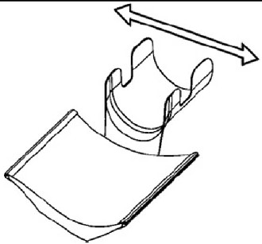
While selecting the best shim size, do not attach the rubber shim yet using the adhesive on the back. It is best to use a piece of tape to hold on the shim in order to see if the size is correct.
Selecting a shim size that is too thick may result in:
Difficulty latching the head holder properly. The head holder must latch so that a patient is not injured.
Damage to the plastic latch or the plastic screws that secure it.
Illustration 14: Correct - Head Holder is latched onto first step of plastic latch mechanism (The head holder does not need to be latched onto the second step)
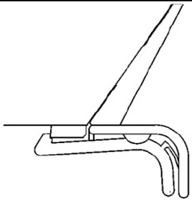
Illustration 15: Wrong - Head Holder is NOT latched after installing shims
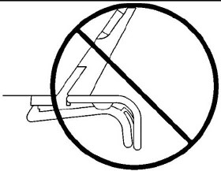
First place the two 4.0mm shims (thickest size) onto both edges of the head holder as shown (use a piece of tape to temporarily secure them).
The shim must be placed with the tab facing out.
The thickness is printed on the shim.
Illustration 16: Headholder Tab
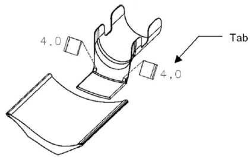
Insert the head holder into the cradle
Check if the head holder is latched onto the cradle at the first step of the plastic latch mechanism. (The head holder does not need to be latched onto the second step)
Check if the head holder has a small free-play in the horizontal direction.
Illustration 17: Axial Head Holder
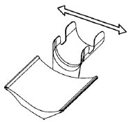
If the rubber is too thick, repeat steps 1-4 using a thinner shim (3.5, 3.0…0.5mm) until the head holder is latched (without excessive force) and fits securely in the cradle.
If the thinnest shim (0.5mm) is too tight, the tab can be cut off to reduce the thickness
Illustration 18: Cut Shim for Headholder
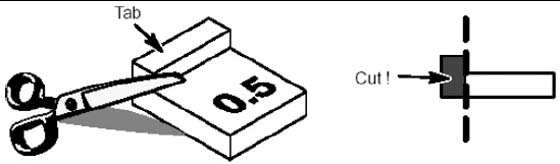
Clean off the surfaces where the shims will mount using alcohol.
Peel off the paper from the back of the selected shims and attach with the tabs facing out. Hold each shim with your fingers for a few seconds to attach it to the head holder.
Review latching of the head holder with the customer after installation.